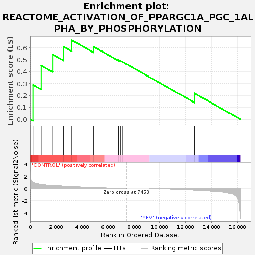
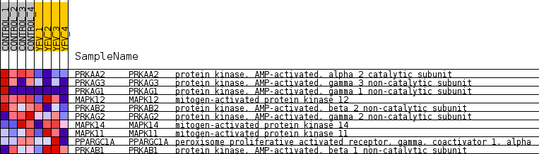
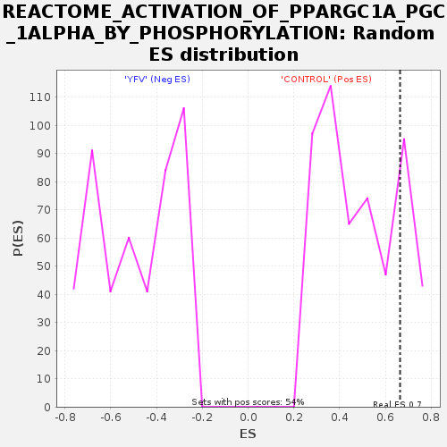

| Dataset | MATRIZ_GSE99081_collapsed_to_symbols.gsea_CLASE_99081.cls#CONTROL_versus_YFV |
| Phenotype | gsea_CLASE_99081.cls#CONTROL_versus_YFV |
| Upregulated in class | CONTROL |
| GeneSet | REACTOME_ACTIVATION_OF_PPARGC1A_PGC_1ALPHA_BY_PHOSPHORYLATION |
| Enrichment Score (ES) | 0.6643095 |
| Normalized Enrichment Score (NES) | 1.3449861 |
| Nominal p-value | 0.21495327 |
| FDR q-value | 1.0 |
| FWER p-Value | 1.0 |

| SYMBOL | TITLE | RANK IN GENE LIST | RANK METRIC SCORE | RUNNING ES | CORE ENRICHMENT | |
|---|---|---|---|---|---|---|
| 1 | PRKAA2 | protein kinase, AMP-activated, alpha 2 catalytic subunit | 223 | 1.029 | 0.2893 | Yes |
| 2 | PRKAG3 | protein kinase, AMP-activated, gamma 3 non-catalytic subunit | 861 | 0.684 | 0.4515 | Yes |
| 3 | PRKAG1 | protein kinase, AMP-activated, gamma 1 non-catalytic subunit | 1739 | 0.500 | 0.5447 | Yes |
| 4 | MAPK12 | mitogen-activated protein kinase 12 | 2585 | 0.399 | 0.6103 | Yes |
| 5 | PRKAB2 | protein kinase, AMP-activated, beta 2 non-catalytic subunit | 3225 | 0.317 | 0.6643 | Yes |
| 6 | PRKAG2 | protein kinase, AMP-activated, gamma 2 non-catalytic subunit | 4895 | 0.167 | 0.6106 | No |
| 7 | MAPK14 | mitogen-activated protein kinase 14 | 6828 | 0.020 | 0.4974 | No |
| 8 | MAPK11 | mitogen-activated protein kinase 11 | 7000 | 0.011 | 0.4901 | No |
| 9 | PPARGC1A | peroxisome proliferative activated receptor, gamma, coactivator 1, alpha | 7129 | 0.004 | 0.4834 | No |
| 10 | PRKAB1 | protein kinase, AMP-activated, beta 1 non-catalytic subunit | 12695 | -0.264 | 0.2184 | No |

